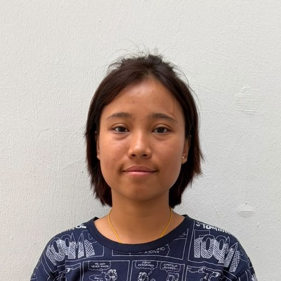

Myanmar · 26 · Elderly care, including bed-bound care
Recommended in writing by the family she is with now, who had her trained at Ang Mo Kio Thye Hua Kwan Hospital over three and a half weeks — transfers, wound care, dysphagia feeding — and she had to pass the therapists’ and nurses’ assessments before their father could be discharged.
“It was not how well Thae carried out the tasks that touched us. It was how well she bonded with my father in law. She truly put her whole heart into caring for him.”
— Jane, her employer now
Trust signals
Our strongest trust signal — two of the three families she has worked for in Singapore, speaking for her, the current one in writing.
At a glance
The essentials
Available from
Anytime. Her employer will release her as soon as a family is ready. Transfer within Singapore.
Why she is available
The grandfather she was brought in to care for has passed away, so the household no longer needs a second helper.
Hospital training
Three and a half weeks at Ang Mo Kio Thye Hua Kwan Hospital, taught by the speech therapist, occupational therapist, physiotherapist and nurses — and assessed by them before he could be discharged.
What she was trained to do
Turning a bed-bound person to prevent bed sores, cleaning wounds and applying dressings, bed-sponging, diapers and clothes, bed-to-chair and wheelchair-to-car transfers, and showering in a commode chair.
Dysphagia care
He was level four. She learned to grind pills to powder, thicken fluids to the right consistency, and feed him — and watched his food being pureed to the consistency he needed.
Before Singapore
A five-month nursing aide course in Myanmar — ageing care, vital signs, medication, mobility and bedside care. Then over a year with an elderly woman with asthma, and three months in a government hospital in Yangon.
Languages
Myanmar fluently and basic Mandarin. Her English is limited, so she suits a household where instructions come in Mandarin or are shown.
Children
Not her ground. She has fed and played with her employer’s young children when they visited, but has not had charge of a child day to day. She would rather do elderly care.
From Jane’s written recommendation, and from the employer before her.
“Thae hit the ground running when I picked her up on the morning of 31 August. By noon that day, she was at Ang Mo Kio Thye Hua Kwan Hospital to meet my father in law and started bonding with him immediately.”
Over the next three and a half weeks the hospital trained her to care for a man who was bed-bound and chair-bound: how to turn him to avoid bed sores, clean wounds and apply medication and dressings, bed-sponge him and change his diapers and clothes. She learned to move him from bed to chair and back, and from wheelchair to car and back, and to shower him in a commode chair. Because of his dysphagia she learned to grind pills to powder and thicken fluids to the right consistency, and to feed him. “All the above skills were taught by the speech therapist, occupational therapist, physiotherapist and nurses at the hospital and Thae had to pass their assessments before my father in law could be discharged.”
“Most importantly it was not how well Thae carried out the above tasks that touched us. It was how well she bonded with my father in law. She truly put her whole heart into caring for him.” Jane closes: “I sincerely hope that you can find a family who will care for Thae as much as she will care for them.”
The employer before her, whom we spoke with directly in August 2026, said much the same in her own words: “strong in strength, willing to do anything she’s asked to do, a fast learner and teachable”; “Thae takes initiative to offer help whenever she sees that help is needed”; “very diligent in housekeeping, and picks up every single visible dirt she sees on the floor throughout the day”.
Since June 2025 — three households, all of them elderly care, and short for a reason worth knowing.
31 August 2026 to now. A household of three in a landed house, brought in for the grandfather — bed-bound, chair-bound and on level-four dysphagia — alongside the family’s existing helper, who did his cooking. Her employment record carries it as cooking, the care of an elderly person and the care of a person with special needs. He has since passed away.
4 May to 31 August 2026. A household of three, caring for a grandmother who used a wheelchair, with the housework and the marketing. That lady died in August and the family no longer needed a helper, so they passed her on themselves — and Jane collected her the same day.
13 June 2025 to 12 March 2026. Her first Singapore household — two people in a four-room flat, registered for cooking, general household and the care of an elderly person.
Why the stints are short. Two of her three placements ended because the person she was caring for died, and the third has now ended the same way. That is the shape of end-of-life care: a family needs someone for a year, or for months, and then they do not. Both of those families spoke for her afterwards, which is the part that counts.
Where she’d suit next. A household with an elderly person — she is one of very few on this site who has been trained in a hospital for a bed-bound patient and assessed before discharge, and she would rather do this work than any other. Mandarin or a household where things can be shown rather than explained; her English is limited.
Jane’s written recommendation and her full employment record are available to interested families, with her consent.
Tell us a little about your household and we’ll be in touch within 1–2 business days. We’ll only move forward if it feels like a genuine fit.